Letra grande de verdad
El tamaño mínimo es fijo y el texto no se encoge para caber: si no cabe, pasa a la siguiente diapositiva.

CentaurUX Research, redesigned.Pega el texto, elige un estilo y descarga el PDF. Letra grande, buen contraste y una idea por diapositiva. Todo pasa en tu navegador: tu texto no se envía a ningún sitio.
Sin registro y sin plantillas grises
Pega el texto de tu post o prueba con el ejemplo para ver aquí las diapositivas.
LinkedIn no deja poner texto alternativo a un documento. Pega también el texto completo en la publicación: así llega a quien usa lector de pantalla y a quien no abre el carrusel. El PDF lleva el texto por debajo de cada diapositiva, para que se pueda buscar y copiar.
El tamaño mínimo es fijo y el texto no se encoge para caber: si no cabe, pasa a la siguiente diapositiva.
Los cuatro estilos tienen un contraste de texto de 10:1 o más. Te enseñamos la cifra de cada uno.
Las negritas copiadas de generadores (𝗮𝘀𝗶́) se pasan a texto normal y salen en negrita de verdad.
¿Pagarías una cantidad simbólica por estas mejoras?
¿Te interesa mucho o echas algo en falta? Escríbeme, soy Jorge: jrebateserrano@gmail.com
Los avisos son orientativos. Letra grande y buen contraste ayudan a leer, pero no garantizan que un contenido sea accesible para todo el mundo. Carrusel legible no está afiliado a LinkedIn.
¿Quieres que el texto de tu post se entienda mejor? Prueba Legible, el asistente de lenguaje claro. ¿Te resulta útil? Puedes invitarnos a un café en Ko-fi.
Privacidad: tu texto no sale de tu navegador. Solo guardamos un borrador en este navegador para que no lo pierdas al recargar. Contamos visitas y clics con GoatCounter, que no usa cookies ni guarda datos personales.